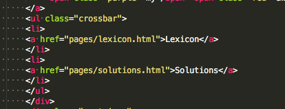
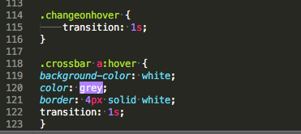

Transition is one oft the most common efects we can use in CSS. It creates a hover-effect. If you use transition you're able to define all the things that should change on your webpage. Use transition carefully, because the effects can be very hard. If you don´t want to use jQuery you can use those hover-effects instead. The effect will cause that an object will change its characteristics while you hover over it with your mouse. Ready to learn the Syntax? Let's go!
Let's show you some transition. Just look at the crossbar of our website and try to hover over it with your mouse. This is how our code looks:
 Now let's start with you, of course you want to learn how to code transition. Transition has 2 major effects: hover and active, which are, yes you guessed right, 2 new properties for CSS. You can build effects, just like we did with them. This is how their structure should look. First you need to link the hover or active with a selector/class to HTML. Standardly the class is called changeonhover or changeonactive. Open up two new CSS-rules. In one we will write down the property transition, which gives us the opportunity to give the browser information about the time we want our transition to last. In the other one, we'll add our classes name and :hover or :active. Active means that the effect will be activated, when we click on an object, hover will be excecuted, when we hover over that object. Reminder: Always put the things, which you want to being "animated" in the class you make up for the effect.